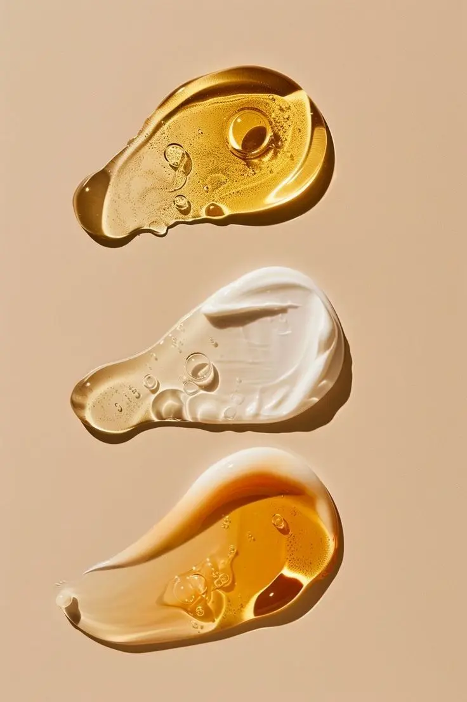
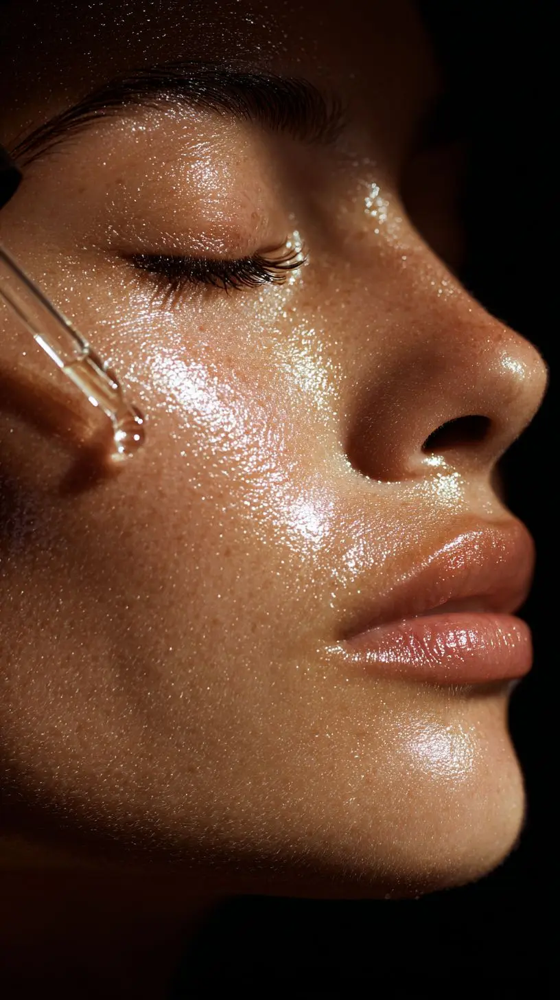

Gentle Ingredients
Formulated with soothing botanicals and safe actives that care for your skin without harshness.
LumiSkin is crafted to bring out your skin's healthiest glow with gentle, effective formulas.
Our products are designed to cleanse, hydrate, and balance, helping you feel confident in your natural beauty.
Formulated with soothing botanicals and safe actives that care for your skin without harshness.

Dermatologist-tested to be kind to delicate skin, ensuring comfort and balance with every use.

Streamlined steps that fit seamlessly into your lifestyle, making skincare simple and consistent.
Discover how LumiSkin can transform your daily skincare into a ritual of radiance.
Shop NowGently remove dirt, oil, and impurities to refresh your skin without stripping its natural moisture. This step creates a clean base, allowing the rest of your routine to absorb and work effectively.

Refresh your skin with a lightweight toner that restores balance and adds a soft veil of hydration. It prepares your complexion for the next step while leaving your skin calm and supple.
Seal in hydration and support your skin barrier with a nourishing moisturizer that leaves skin soft, comfortable, and smooth.